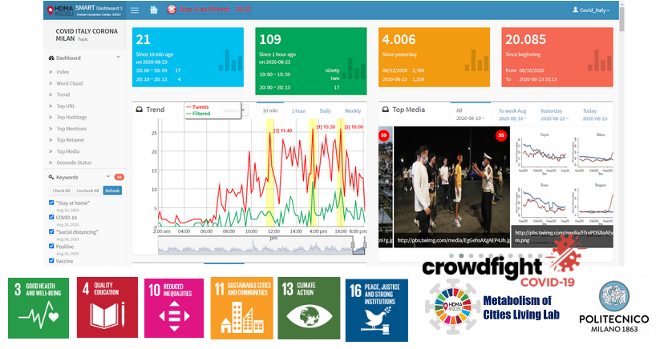

The Social Response to Covid-19 Smart Dashboard
Using automatic data processing for Twitter messages, the Social Response to Covid-19 Smart Dashboard helps researchers: Search Tweets in different cities, Filter noise (such as removing redundant retweets and using machine learning methods to improve precision), Analyze social media data from a spatiotemporal perspective and Visualize social media data in various aspects (such as weekly and monthly trends, top URLs, top retweets, top mentions or top hashtags). The Social Response to Covid-19 Smart Dashboard uses multiple data mining programs, GIS methods, and advanced geo-targeted social media API’s to track selected topics in space and over time. Researchers can utilize the Covid-19 Smart Dashboard to visualize, characterize, and predict trends in these topics in different cities the focus topics currently include: Social distancing (distanziamento sociale), Tested positive (positivi), Stay at home, Vaccine (vaccino), Coronavirus/ COVID/ COVID-19, Symptoms (sintomi), Masks (mascherine), Quarantine (quarantena), Hand sanitizer (amuchina), and Giuseppe Conte. There are multiple components to searching, processing, and visualizing social media messages from Twitter search APIs, the filtered statistics of the focus topics and geo targeted cities are visually represented in the smartdashboard. Features of the smart dashboard interface include the list of targeted cities to choose from and shortcuts to different functions. Top index numbers display the number of tweets collected from the current day, past week or month, as well as total tweets collected. The trend feature provides a graph depicting the number of tweets which can be adjusted to show only filtered, unfiltered or both. Users can switch the view to monthly, weekly, or daily. The points on the line chart can be clicked to reveal interactive queries of actual tweeting text. Top media displays the most shared images. Top Shared URLs are shown here. The word cloud functions show the most prominent conversation keywords which can be selected via tweets using those particular keywords. The dashboard visualizes the frequency of words, top retweets, top hashtags, and user mentions. The tweets in Cities function can show the normalized tweeting rates by city population. Based maps can be changed to preference. Case studies: The Social Response to Covid-19 Smart Dashboard can been used to track spatial-temporal trends in multiple case studies. Analysis of Covid data indicates that correlation coefficient between weekly aggregated Covid tweeting rates and vaccine policy occurrence tweets from local governments, public health leaders, and policymakers. This information allows us to understand the impact of Covid-19 enacted policies.
The daily monitoring capability has great potential for local, state, public health agencies, and practitioners to integrate real-time information to investigate large-scale disease outbreaks. Another case study of The Social Response to Covid-19 Smart Dashboard is sentiments on Covid and vaccines in Italian cities based on new policy mandates and curfews. The Social Response to Covid-19 Smart Dashboard uniquely captures the temporal and spatial nature of Covid related policies, behaviors, beliefs, and sentiments through Twitter content revealing various trends in diverse geographic areas. Another potential use is to monitor public opinion towards crisis events such as the SARS Covid-19 outbreak. The dashboard visualizes the most popular media shared in Twitter based on the Covid-19 pandemic and real-time. This type of media can allow policymakers understand the current behaviors of society and can be used to observe public opinion during and after crisis events or disease outbreaks. The smart dashboard is available for use to assist response and assistance efforts during the Covid-19 pandemic. Real-time public health information and major events capture using social media is now at the forefront of: Behavioral measurement, Disease surveillance, Health promotion, and more. Different cities and regions may reveal different patterns of social media messages and trends. By analyzing the context of social media messages, linking place and time together we can discover more meaningful patterns and insights of disease outbreaks and social media activities. We hope you enjoyed learning about The Social Response to Covid-19 Smart Dashboard. To keep updated with our research, to join our team or to support our research please contact Dr. Gabriela Fernandez at gfernandez2@sdsu.edu.